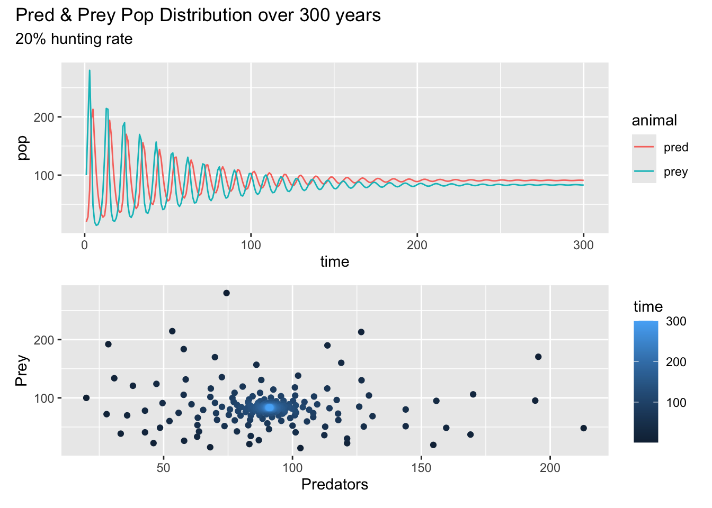
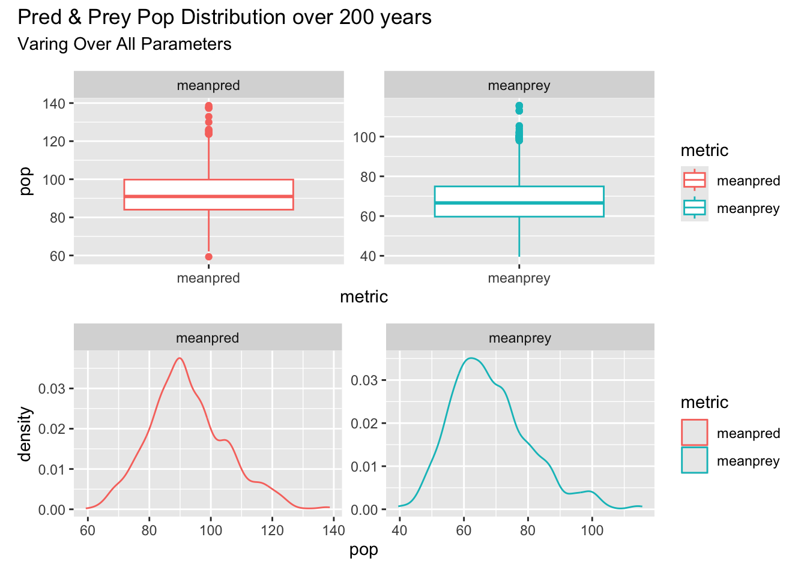
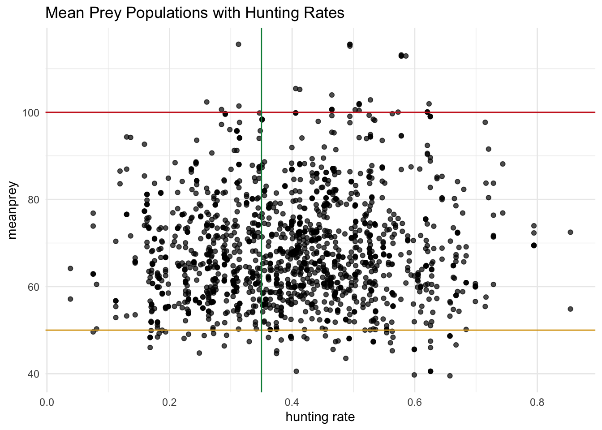
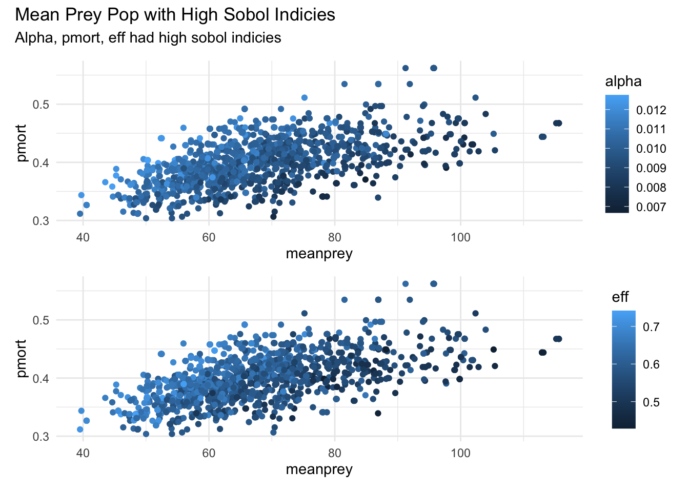
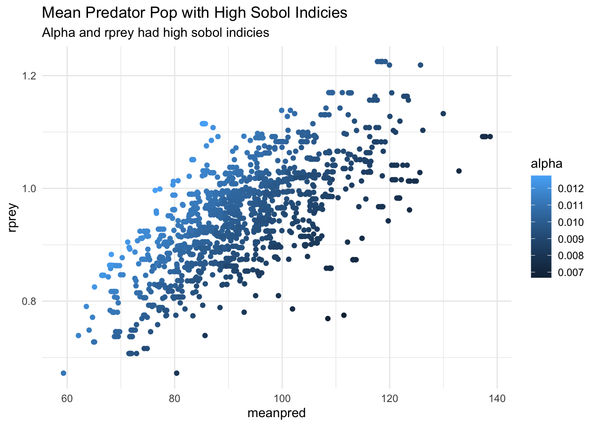
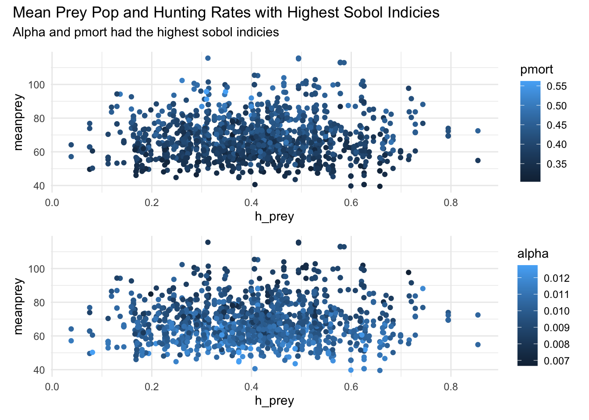
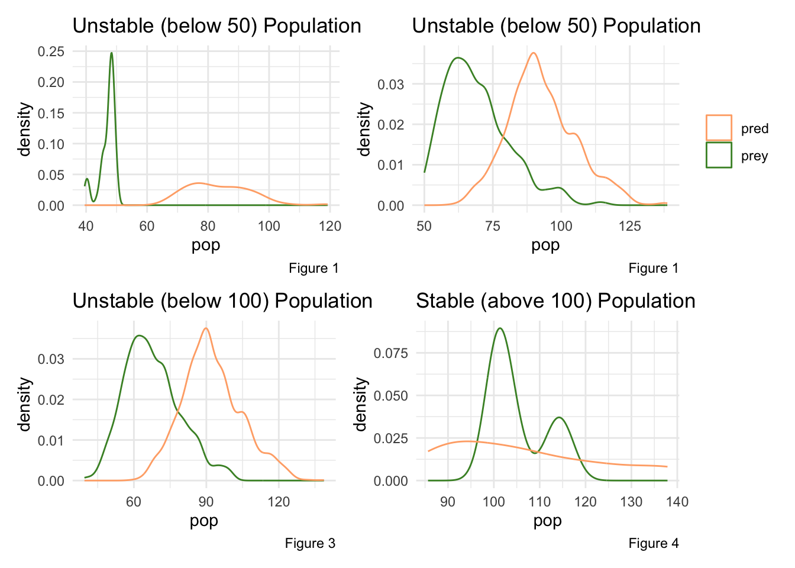
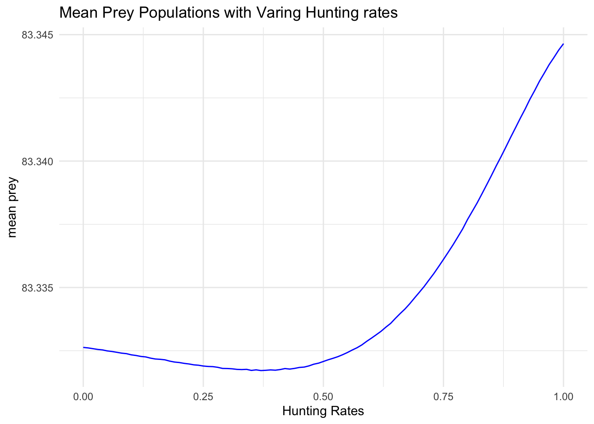
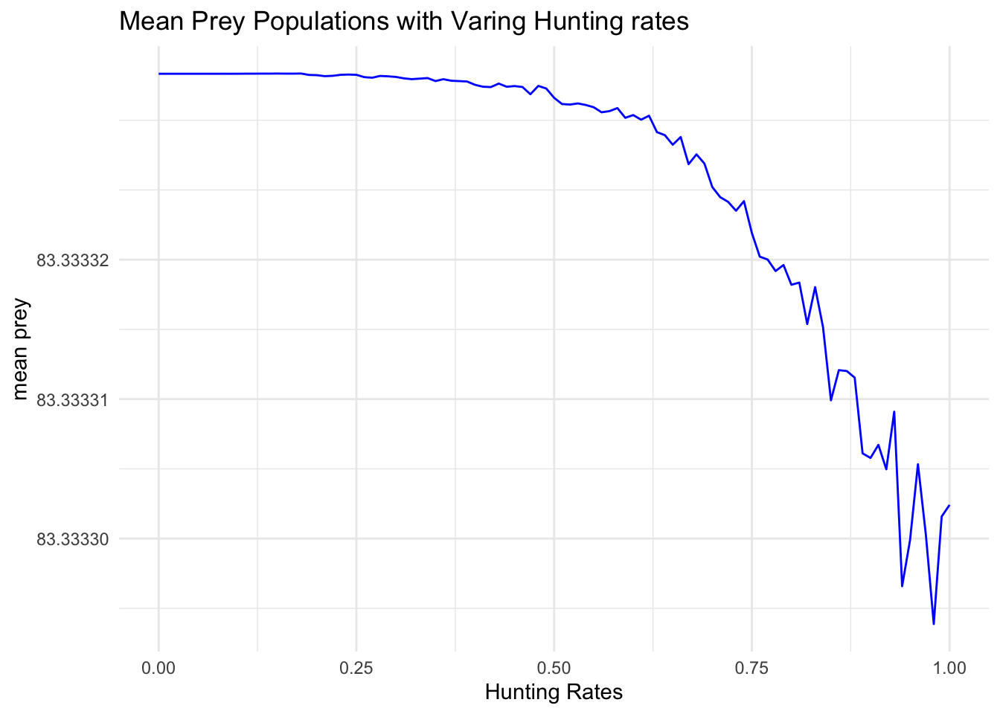

library(sensitivity)
library(tidyverse)
library(deSolve)
library(lhs)
library(purrr)
library(here)
library(ggpubr)
library(patchwork)assignment7
Assignment 7
Consider how you might add hunting of prey to the predator prey model that we’ve been using in class\
Part 1:
Build this model (e.g add hunting to the lotvmodK.R),
Some requirements/hints for your model
You should make sure that you don’t hunt more prey than exist.
To ensure that you might also add a minimum prey population input that must be met before hunting is allowed.
Note you can make this as simple or as complex as you would like. You could represent hunting in a way that is similar to “harvesting” in the last assignment - or you could make hunting an exogenous process - so a time based input to your model
source(here::here("assignment7", "lotvmodk_hunt.R"))
lotvmodk_huntfunction (t, pop, pars, min_prey = 50)
{
with(as.list(c(pars, pop)), {
h_prey <- ifelse(h_prey * prey > min_prey, h_prey, 0)
dprey <- (rprey * (1 - prey/K) * prey) - (alpha * prey *
pred) - h_prey
dpred <- (eff * alpha * prey * pred) - (pmort * pred)
return(list(c(dprey, dpred)))
})
}Part 2
Explore how different hunting levels and uncertainty/variation in parameters in your model are likely to effect the stability of the populations of both predator and prey. A key challenge is how you might want to define stability? It is up to you but you will need to write a sentence to explain why you chose the measure that you did. It could be something as simple as maintaining a population above some value 50 years into the future.
Stability:
Systems ability to maintain a balanced population of both prey and predator with healthy oscillations between the populations.
Original thought: For this project, the prey population is considered stable if the average prey population is above 50% of the original population size over 200 years. Here, the initial prey population is 100. Therefore, the prey population is considered unstable when the population average numbers decrease below 50.
- I used average prey population because that metric describes the central movement of prey populations.
As the assignment progresses, I re-evaulate this stability definition to shower viewers how the stability definition matters in predator-prey interactions and for conversation.
Use this exploration to recommend a hunting target that will be sustainable (e.g leave you with a stable prey and predator population).
It is up to you how you “explore” hunting - you can simply try different values of the parameters in your hunting model or do it more formally by running your model across a range of values. You could think about parameter interactions
You can assume the following are best guesses of key parameters
rprey=0.95, alpha=0.01, eff=0.6,pmort=0.4, K=2000,
Implementation of Predation-Prey function (with hunting)
Looking at predator and prey population with 0% prey hunting rates.
# inital conditions
inital_cond <- c(prey = 100, pred = 20)
# time points
tm <- seq(from = 1, to = 300) # for 300 days
# set parameters
pars <- c(rprey = 0.95, alpha = 0.01, eff = 0.6, pmort = 0.5, K = 2000, h_prey = 0)
# run the model
res <- ode(func = lotvmodk_hunt, y = inital_cond, times = tm, parms = pars)
# Make results tidy data
res_df <- as.data.frame(res) %>%
pivot_longer(-time,
names_to = "animal",
values_to = "pop")
# Graph
a <- ggplot(res_df, aes(time, pop, col = animal)) +
geom_line()
b <- ggplot(as.data.frame(res), aes(pred, prey, col = time)) +
geom_point() +
labs(y = "Prey", x = "Predators")
a / b + plot_annotation(title = "Pred & Prey Pop Distribution over 300 years",
subtitle = "0% hunting rate")Looking at predator and prey population with 20% prey hunting rates.
# inital conditions
inital_cond <- c(prey = 100, pred = 20)
# time points
tm <- seq(from = 1, to = 300) # for 300 days
# set parameters
pars <- c(rprey = 0.95, alpha = 0.01, eff = 0.6, pmort = 0.5, K = 2000, h_prey = 0.2)
# run the model
res <- ode(func = lotvmodk_hunt, y = inital_cond, times = tm, parms = pars)
# Make results tidy data
res_df <- as.data.frame(res) %>%
pivot_longer(-time,
names_to = "animal",
values_to = "pop")
# Graph
a <- ggplot(res_df, aes(time, pop, col = animal)) +
geom_line()
b <- ggplot(as.data.frame(res), aes(pred, prey, col = time)) +
geom_point() +
labs(y = "Prey", x = "Predators")
a / b + plot_annotation(title = "Pred & Prey Pop Distribution over 300 years",
subtitle = "20% hunting rate")
The plots above shows the prey and predator populations oscillating overtime as parameters are held constant. However, the first one has a 0% hunting rate and the second one has 20% hunting rate. Both of the plots show prey populations settling around 85 and predator populations settling around 90. This illustrates that 20% hunting rate has limited effects to the populations. The prey population is productive and resilient. Meaning original stability threshold might be conservative.
Run Sobol
To understand how population estimates vary with varying parameters.
Generate Parameters
rprey=0.95, alpha=0.01, eff=0.6, pmort=0.4, K=2000 with a standard deviation of 10%.
np <- 200
# one set of parameters
K <- rnorm(mean = 2000, sd = 200, n = np)
rprey <- rnorm(mean = 0.95, sd = 0.095, n = np)
alpha <- rnorm(mean = 0.01, sd = 0.001, n = np)
eff <- rnorm(mean = 0.6, sd = 0.06, n = np)
pmort <- rnorm(mean = 0.4, sd = 0.04, n = np)
#h_prey <- rnorm(mean = 0.4, sd = 0.04, n = np)
h_prey <- rnorm(mean = 0.4, sd = 0.14, n = np)
x1 <- cbind.data.frame(rprey = rprey, K = K, alpha = alpha, eff = eff, pmort = pmort, h_prey = h_prey)
# repeat to get our second set of samples
K <- rnorm(mean = 2000, sd = 200, n = np)
rprey <- rnorm(mean = 0.95, sd = 0.095, n = np)
alpha <- rnorm(mean = 0.01, sd = 0.001, n = np)
eff <- rnorm(mean = 0.6, sd = 0.06, n = np)
pmort <- rnorm(mean = 0.4, sd = 0.04, n = np)
h_prey <- rnorm(mean = 0.4, sd = 0.15, n = np)
#h_prey <- rnorm(mean = 0.4, sd = 0.04, n = np)
x2 <- cbind.data.frame(rprey = rprey, K = K, alpha = alpha, eff = eff, pmort = pmort, h_prey = h_prey)Create Sobol Object
# Create sobol object
sens_pp <- sobolSalt(model = NULL, x1, x2, nboot = 300)
# Change column names
colnames(sens_pp$X) <- c("rprey", "K", "alpha", "eff", "pmort", "h_prey")Create metric function that finds the average of prey and predator populations
compute_metrics <- function(result) {
meanprey <- mean(result$prey)
meanpred <- mean(result$pred)
# return results
return(list(meanprey = meanprey, meanpred = meanpred))
}Create wrapper function
wrapper_func <- function(t, pop, rprey, alpha, eff, pmort, K, h_prey, func) {
parms <- list(rprey = rprey, alpha = alpha, eff = eff, pmort = pmort, K = K, h_prey = h_prey)
result <- ode(y = pop, times = t, func = func, parms = parms)
colnames(result) <- c("time", "prey", "pred")
# get metrics
metrics <- compute_metrics(as.data.frame(result))
return(metrics)
}Run Wrapper for all parameters
# Set intital pop size and time (200 yrs)
pop <- c(prey = 100, pred = 80)
tm <- seq(from = 1, to = 200)
# Run the model for all parameters
allresults <- as.data.frame(sens_pp$X) %>%
pmap(wrapper_func, pop = pop, t = tm, func = lotvmodk_hunt)
# Results -> unlisted form
allres <- allresults %>% map_dfr(`[`, c("meanprey", "meanpred"))
# Range of response across parameter uncertainity
allresl <- allres %>% gather(key = "metric", value = "pop")
# Create df with parameters and sobol results
allresp_df <- as.data.frame(cbind(sens_pp$X, allres))Looking at the results - dataframe and graphs
head(allresp_df) rprey K alpha eff pmort h_prey meanprey
1 1.090725 1695.737 0.010398248 0.6410121 0.4264320 0.3437863 64.23608
2 1.030285 2000.827 0.008595902 0.7048282 0.3761136 0.1828701 62.48496
3 1.044701 1948.596 0.010567985 0.5423253 0.4127274 0.5222033 72.23307
4 1.006230 2021.370 0.009183513 0.5657728 0.3787454 0.3985738 73.22456
5 1.006473 2450.741 0.009891969 0.6045548 0.4038377 0.5910529 67.76725
6 0.786085 2079.768 0.009375086 0.5883926 0.3064599 0.3697283 55.72919
meanpred
1 101.07754
2 116.30053
3 95.30059
4 105.69985
5 99.03976
6 81.92160a <- ggplot(allresl, aes(metric, pop, col = metric)) +
geom_boxplot() +
facet_wrap(~metric, scales = "free")
b <- ggplot(allresl, aes(pop, col = metric)) +
geom_density() +
facet_wrap(~metric, scales = "free")
a / b + plot_annotation(title = "Pred & Prey Pop Distribution over 200 years",
subtitle = "Varing Over All Parameters")
ggplot(allresp_df, aes(h_prey, meanprey)) +
geom_point(alpha = 0.70) +
geom_hline(aes(yintercept = 50), col = "goldenrod")+ # stability definition
geom_hline(aes(yintercept = 100), col = "firebrick3")+ # possible change in stability definition
geom_vline(aes(xintercept = 0.35), col = "springgreen4")+ # Hunting rate
labs(x = "hunting rate",
title = "Mean Prey Populations with Hunting Rates") +
theme_minimal()
The first plot demonstrates the distribution of the populations. The mean prey population has an average of about 68 and mean predator population has an average of about 90. Both populations have a spread of about 60.
The second plot starts to analyze hunting rates impacts on prey populations. All hunting rates seem to have prey populations over the stability definition of 50 (yellow horizontal line). With this definition, hunting rates can go up to 100% which means the stability definition is WAY too conservative.
A more strict stability is better explained with by a prey population of over 100 (red horizontal line). This definition exhibits lots of mean prey populations that are unstable and a couple that are stable. If so, a hunting rate of 0.35 (green vertical lines) might be sufficient because there are some stable average prey populations beyond a hunting rate of 0.35. Thus, a hunting rate of 0.30-0.35 is precautionary and avoids absolutely collapsed populations and still allows for hunting.
Sobol Indices
# for meamnprey
sens_PP_meanprey <- sens_pp %>% sensitivity::tell(y = allres$meanprey)
rownames(sens_PP_meanprey$S) <- c("rprey", "K", "alpha", "eff", "pmort", "h_prey")
rownames(sens_PP_meanprey$T) <- c("rprey", "K", "alpha", "eff", "pmort", "h_prey")
# for maxprey
#meanrpred
sens_PP_meanpred <- sens_pp %>% sensitivity::tell(y = allres$meanpred)
rownames(sens_PP_meanpred$S) <- c("rprey", "K", "alpha", "eff", "pmort", "h_prey")
rownames(sens_PP_meanpred$T) <- c("rprey", "K", "alpha", "eff", "pmort", "h_prey")Put Sobol Indices together in one table
# S Indices
sobol_S = as.data.frame(
rbind(
sens_PP_meanprey$S$original,
sens_PP_meanpred$S$original
))
colnames(sobol_S) <- c("rprey", "K", "alpha", "eff", "pmort", "h_prey")
rownames(sobol_S) <- c("meanprey", "meanpred")
sobol_S rprey K alpha eff pmort h_prey
meanprey -0.03733727 -0.03819833 0.3481707 0.25178024 0.27847119 -0.03834915
meanpred 0.43181638 -0.07703972 0.5572788 -0.07936502 -0.07812924 -0.07470984# T Indices
sobol_T = as.data.frame(
rbind(
sens_PP_meanprey$T$original,
sens_PP_meanpred$T$original
))
colnames(sobol_T) <- c("rprey", "K", "alpha", "eff", "pmort", "h_prey")
rownames(sobol_T) <- c("meanprey", "meanpred")
sobol_T rprey K alpha eff pmort
meanprey 3.676396e-05 4.048388e-06 0.3613511 0.306821986 0.290281892
meanpred 4.728947e-01 9.060207e-04 0.5959504 0.001039718 0.001095689
h_prey
meanprey 5.873088e-06
meanpred 1.339378e-04For meanprey, S1 and T are consistent. The interaction coefficient (alpha), the predator’s rate of ingestion of prey (eff), and mortality rate (pmort) drive variance both individually and through interactions. Whereas, prey growth rate (rprey), carrying capacity (K), and hunting rate (h_prey) have limited impact.
For meanpred, prey growth rate (rprey) and interaction coefficient (alpha) drive variance individually. When looking at interactions (T), alpha is showing to be the most impactful. The carrying capacity (K), hunting rate (h_prey), predator’s rate of ingestion of prey (eff), mortality rate (pmort) are essentially irrelevant for predator dynamics.
Therefore, with hunting to have minimal impact on prey and predator populations, the original stability definition might be too conservative. A stability definition of 100 might make more sense.
Graph Parameters Graphing the parameters that sobol indicated had the highest impact
# Mean Prey
a <- ggplot(allresp_df, aes(meanprey, pmort, col=alpha )) +
geom_point() +
theme_minimal()
b <- ggplot(allresp_df, aes(meanprey, pmort, col=eff )) +
geom_point() +
theme_minimal()
a / b + plot_annotation(title = "Mean Prey Pop with High Sobol Indicies",
subtitle = "Alpha, pmort, eff had high sobol indicies")
# Mean predator
ggplot(allresp_df, aes(meanpred, rprey, col=alpha )) +
geom_point() +
theme_minimal() +
labs(title = "Mean Predator Pop with High Sobol Indicies",
subtitle = "Alpha and rprey had high sobol indicies")
Sobol results show graphical importance to predator and prey populations. Pmort, eff, and alpha are illustrated as the most impactful in prey populations. Whereas, rpey and alpha impact predator populations the most.
Graphing mean prey populations and the hunting rates with the highest sobol indices.
# Looking at hunting
a <- ggplot(allresp_df, aes(h_prey, meanprey, col=pmort )) +
geom_point() +
theme_minimal()
b <- ggplot(allresp_df, aes(h_prey, meanprey, col=alpha )) +
geom_point() +
theme_minimal()
a / b + plot_annotation(title = "Mean Prey Pop and Hunting Rates with Highest Sobol Indicies",
subtitle = "Alpha and pmort had the highest sobol indicies")
The hunting graphs show what the sobol indices said - hunting rate are irrelevant to output variances and hunting rates do not work in coordination with parameters with high sobol indices. Mean prey populations are mostly between 50 to 100 and that is consistent between hunting rates of 0.10 to 0.60.
Unstable vs Stable
As dicussed before, the orginal stability definition of 50 might be too conservative. 100 might be a better definition. To look into this, I will plot the distubtion of stable vs unstable populations of both of thse definitions.
# stability definition of 50
unstable_pop_50 <- allresp_df %>%
filter(meanprey < 50)
stable_pop_50 <- allresp_df %>%
filter(meanprey >= 50)
# stability definition of 100
unstable_pop_100 <- allresp_df %>%
filter(meanprey < 100)
stable_pop_100 <- allresp_df %>%
filter(meanprey >= 100)unstable_plot_50 <- ggplot(unstable_pop_50) +
geom_density(aes(meanprey), col = "#488f30") +
geom_density(aes(meanpred), col = "#ffad76") +
labs(title = "Unstable (below 50) Population",
caption = "Figure 1",
x = "pop") +
theme_minimal()
stable_plot_50 <- ggplot(stable_pop_50) +
geom_density(aes(meanprey, color = "prey")) +
geom_density(aes(meanpred, color = "pred")) +
scale_color_manual(values = c("prey" = "#488f30", "pred" = "#ffad76")) +
labs(title = "Unstable (below 50) Population",
caption = "Figure 1",
x = "pop",
color = " ") +
theme_minimal()
unstable_plot_100 <- ggplot(unstable_pop_100) +
geom_density(aes(meanprey), col = "#488f30") +
geom_density(aes(meanpred), col = "#ffad76") +
labs(title = "Unstable (below 100) Population",
caption = "Figure 3",
x = "pop") +
theme_minimal()
stable_plot_100 <- ggplot(stable_pop_100) +
geom_density(aes(meanprey), col = "#488f30") +
geom_density(aes(meanpred), col= "#ffad76") +
labs(title = "Stable (above 100) Population",
caption = "Figure 4",
x = "pop") +
theme_minimal()
(unstable_plot_50 + stable_plot_50) / (unstable_plot_100 + stable_plot_100)
The plots show the distribution of predator (orange) and prey populations (green) of stable and unstable populations between the two stability definitions (50 vs 100).
Figure 1 (with populations under 50 = unstable) show low prey and predator populations which means in this definition of stability, most of the populations are considered stable (seen in Figure 2’s high population densities). This again alludes to a too conservative stability definition.
The opposite is true for Figures 3 and 4 which have 100 as the stability definition. There is way more unstable populations than stable populations. This could be considered too strict of a stability definition. As a conservationist, I favor strict stability metrics.
Vary Hunting Rates
Now that we know how all the parameters interact and impact the populations with sobol, lets just vary hunting rates and see how that changes the populations overtime. This will allow us better assess the prior sustainable hunting rate suggestion.
I want to see where the system is collapsing but my function prevents that with h_prey <- ifelse(h_prey * prey > min_prey, h_prey, 0) . I will have to change min_prey to 0 in order to see where the prey population is collapsing.
# Create a wrapper function that varies withing pressures
recommend_hunting <- function(pars, init, times, threshold = 50,
h_prey_range = seq(0, 1, by = 0.01)) {
#
results <- sapply(h_prey_range, function(h) {
pars["h_prey"] <- h # Over ide h_prey in parms with input humting rates
out <- ode(func = lotvmodk_hunt, y = init, times = times, parms = pars, min_prey = 0)
tail_rows <- tail(out, n = round(0.2 * nrow(out))) # last 20% of time steps = steady state
mean(tail_rows[, "prey"]) # records mean prey
})
# Create dataframme
results_df <- data.frame(cbind(meanprey = results,
h_prey = h_prey_range))
ggplot(results_df)+
geom_line(aes(x = h_prey, y = meanprey), color = "blue") +
theme_minimal() +
labs(x = "Hunting Rates",
y = "mean prey",
title = "Mean Prey Populations with Varing Hunting rates")
}
# setting parameters
pars <- c(rprey = 0.95, alpha = 0.01, eff = 0.6, pmort = 0.5, K = 2000, h_prey = 0)
inital_cond <- c(prey = 100, pred = 20)
tm <- seq(from = 1, to = 500) # for 300 days
# Run function over 300 days
recommend_hunting(
pars = pars,
init = inital_cond,
times = tm,
threshold = 50
)
# Run function over 1,000 days
tm <- seq(from = 1, to = 1000) # for 1000 days
recommend_hunting(
pars = pars,
init = inital_cond,
times = tm,
threshold = 50
)
The first plot illustrates what the sobol showed - hunting rate has minimal impact to the populations. So I lengthen my time step to get a better understanding of hunting rates over a longer time. This means the prey populations are highly resilient to hunting pressure at these parameters. The second plot displays the mean prey populations starting to drop off quickly at a hunting rate of 0.50 with a slight decreases at 0.25. Veering away from my original (uneducated) definition of stability, I would suggest a hunting rate of 0.25-0.30 to be precautionary and maintain healthy prey populations. This is a similar (a little more strict) hunting suggestion as mentioned prior.